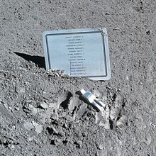

It is a small stylized figure, meant to depict an astronaut in a spacesuit, intended to commemorate the astronauts and cosmonauts who have died in the advancement of space exploration.
It was commissioned and placed on the Moon by the crew of Apollo 15 at Hadley Rille on August 1, 1971, next to a plaque listing the fourteen men known at the time to have so died.
The crew kept the memorial's existence a secret until after completion of their mission. After public disclosure, the National Air and Space Museum requested and received a replica of the statue.
Prior to his Apollo 15 lunar mission, astronaut David Scott met Belgian painter and printmaker Paul Van Hoeydonck at a dinner party.
It was there agreed that Van Hoeydonck would create a small statuette for Scott to place on the Moon, though their recollections of the details disagree.
Scott's purpose was to commemorate those astronauts and cosmonauts who had lost their lives in the furtherance of space exploration, and he designed and separately made a plaque listing fourteen American and Soviet names.
Van Hoeydonck was given a set of design specifications: the sculpture was to be lightweight but sturdy, capable of withstanding the temperature extremes of the Moon; it could not be identifiably male or female, nor of any identifiable ethnic group.
According to Scott, it was agreed Van Hoeydonck's name would not be made public, to avoid the commercial exploitation of the US government's space program.
Scott kept the agreement secret from NASA management prior to the mission, smuggling the statue aboard his spacecraft.
Van Hoeydonck gives a different account of the agreement: according to an interview in Belgian newspaper Le Soir, the statue was supposed to be a representation of all mankind, not only fallen astronauts or cosmonauts.
He claimed he did not know the statue would be used as a memorial for the fallen space-goers, and the name given to the work was neither chosen nor approved by him; he had intended the figure to be left standing upright.
He also denies it was agreed he would remain anonymous.
Both his and Scott's versions of events are given in an article in Slate magazine in 2013.

Jump to Top